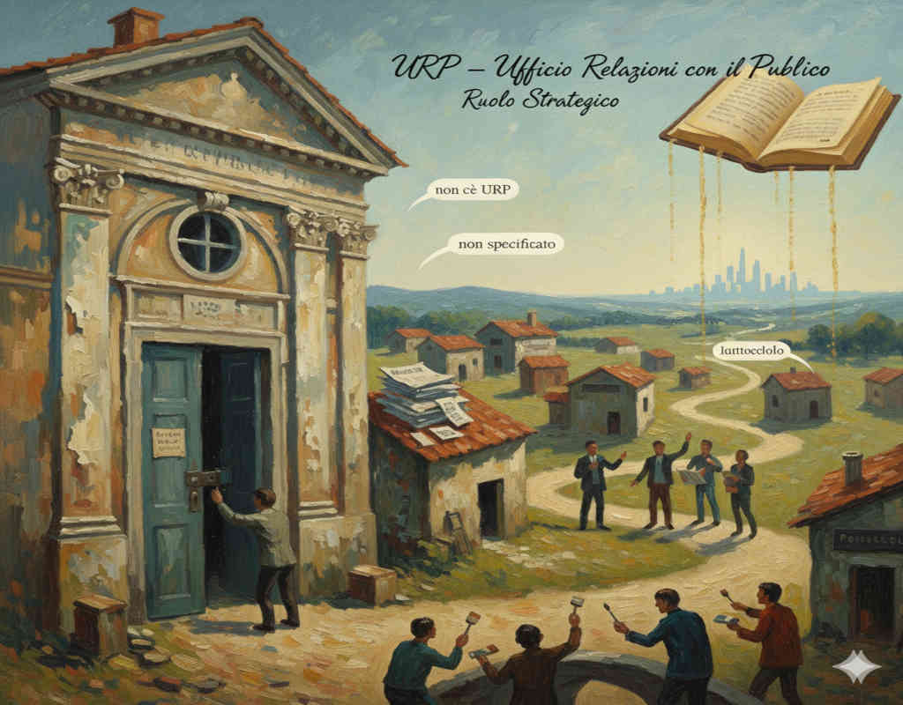

URP è l’acronimo di Ufficio Relazioni con il Pubblico ed è definito dall’art. 8 della LEGGE 7 giugno 2000, n. 150 (1) che, al comma 2, prescrive alle “pubbliche amministrazioni” di istituire ed organizzare il proprio URP.
Vale la pena di leggere tutto l’articolo: leggete, leggete e aprite il cuore e i polmoni.
Diligentemente, il Comune di Viterbo ha ottemperato all’articolo, tant’è che sul suo sito (2) possiamo leggere che l’URP ha un “Ruolo Strategico” in quanto “rappresenta un punto di contatto essenziale tra il Comune e la cittadinanza, contribuendo a rendere l’amministrazione più efficiente, accessibile e partecipativa. La sua attività mira a migliorare la qualità dei servizi e a rafforzare il rapporto di fiducia tra cittadini e istituzioni” (il grassetto è sul testo del sito).
L’URP del Comune di Viterbo è inserito nel Settore IV cui compete anche “Cittadinanza Attiva e Partecipazione”. Il Comune ha, a nostro modesto avviso, giustamente inserito l’URP nel Settore IV.
Il sito indica che la sede principale dell’URP sta in Piazza del Plebiscito, tuttavia non riporta l’orario d’apertura.
Una mail inviata a per conoscere l’orario, ha ricevuto come risposta: “Sono spiacente ma non esiste più una sede URP in Piazza del Plebiscito. Può trovare me presso la sede ex circoscrizione di Bagnaia in piazza XX Settembre”.
Mi sono recato a Bagnaia dove sono venuto a sapere che al momento il ricevimento in presenza è limitato alla sola sede di Bagnaia tutte le mattine dalle 9.30 alle 13.30, altrimenti al telefono: informazioni che non si trovano sul sito del Comune.
Questa realtà stride col dichiarato “ruolo strategico” e “punto di contatto essenziale” dell’URP istituito per contribuire a “rendere l’amministrazione più efficiente, accessibile e partecipativa”.
Sicché ho sguinzagliato 5 persone amiche residenti in altrettanti Comuni della Tuscia. Chiedevo: il tuo Comune ha l'URP, dove si trova, quali sono gli orari di apertura, chi è il responsabile?
Una ha risposto positivamente e in modo completo.
Le altre quattro hanno risposto così:
non c’è URP, fanno al Protocollo
non c’è URP
URP del Comune non è specificato
non abbiamo un ufficio preposto. Gestiamo tutto direttamente noi.
La questione, quindi, non è solo viterbese: siamo a 1 Comune OK e a 5 Comuni non OK.
Non è molto incoraggiante. Il campione è limitato e non consente induzioni, per cui vi invito a indagare in altri Comuni anche extra Tuscia anche visitando i loro siti informatici. Fatemi sapere.
Ma torniamo alla locuzione che il sito del Comune di Viterbo richiama: “cittadinanza attiva”.
Uno dei caratteri della “cittadinanza attiva”, consiste nell’esercitare influenza diretta sui processi al fine di un’applicazione delle leggi non formale ma effettiva (3): l’URP di Viterbo può costituire un banco di prova per esercitare questa cittadinanza attiva. E anche gli altri URP degli altri Comuni, se esistessero, potrebbero costituire un banco di prova per esercitare la “cittadinanza attiva”.
Come? Beh, se si vuole che “cittadinanza attiva” non resti una espressione buona solo per un “sito del Comune”, ma venga riempita di contenuto, occorre che i cittadini in prima persona si attivino e ci mettano la faccia. Inoltre, siccome la cittadinanza attiva non è una jacquerie, occorre conoscere le leggi e rivendicarne l’applicazione, a cominciare da quella (1) che prescrive l’URP.
Per venire incontro a questa esigenza: “conoscere le leggi per poterne rivendicare l’applicazione”, la Consulta del Volontariato di Viterbo e la Scuola di Tuscania di Formazione per Amministratori Pubblici Locali, promossa da Asso-Tuscania (4), organizzano per febbraio a Viterbo quattro incontri, per fornire strumenti con cui esercitare la cittadinanza attiva.
https://www.normattiva.it/uri-res/N2Ls?urn:nir:stato:legge:2000-06-07;150
https://comune.viterbo.it/amministrazione/unita_organizzativa/ufficio-relazioni-col-pubblico-urp/
https://www.treccani.it/enciclopedia/la-cittadinanza-attiva-nascita-e-sviluppo-di-un-anomalia_(L%27Italia-e-le-sue-Regioni)/ Si veda anche l’intervista https://youtu.be/tXmiv38UGHA dal minuto 6 al minuto 27
Raimondo Raimondi